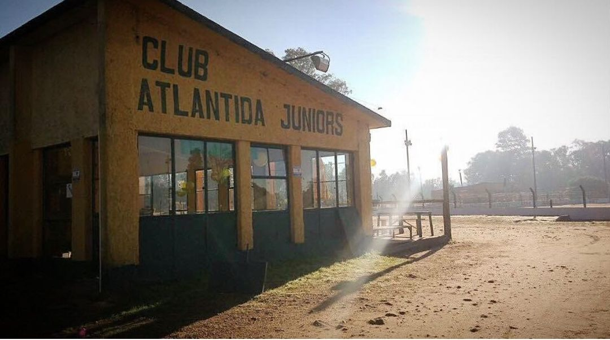

Historia
Fundacion del CLub Atlantida Juniors. Los 4 fundadores de este hermoso club jugaban juntos en el Deportivo de Atlantida al futbol de salon, hasta que decidieron que el balnearia debia tener un cuadro de futbol 11 y sin mas llevaron a cabo la fundacion del club a puro pulmon.
13 de junio de 1958
16 de julio de 1960
Luego de varios años de mucho trabajo se comienzan a ver los primeros frutos y se consigue el primer titulo del club!
Llega la primera clasificacion a la competicion mas importante que se puede jugar en este futbol amateur a nivel de clubes del interior.
29 de octubre de 1966
17 de julio de 1971
Campeon de la copa local algunos años mas tarde de su creacion.
Luego de varios años sin titulos se logra campeonar a un nivel mas alto que el campeonato local levantando la copa de campeones de canelones.

15 de diciembre de 1995
27 de diciembre de 2021
Tras 26 años sin alegrias logramos clasificar nuevamente a la copa mas importante a nivel de clubes del interior luego de salir segundos en la copa de campeones de canelones.
Actualmente estamos disputando la Copa OFI B, vamos por 16vos y buscamos el titulo, esperemos poder darle esta alegria a la gente del club.